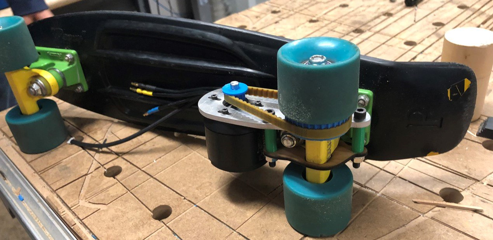

Electric Penny Board
September 2019 - Present
We're creating a bluetooth-enabled, unintrusive motor attachment that allows users to motorize their Penny boards.
Overview
- Penny boards are small skateboards with a 22 inch deck and are used for cruising on flatter surfaces.
- We're designing an attachment that motorizes a Penny board without damaging/replacing any original Penny parts.
- The attachment will be controlled using the volume buttons on a smartphone.

The Team
- Mohsin Haider (myself): A novice Penny-boarder.
- Fran Romano: My friend and also an expert Penny-boarder (check him out here). Together we're two Mechanical Engineering students looking for a fun and exciting way to apply our technical skills.
Current Progress
Our most recent progress was a successful run of the motor attachment on the skateboard using the battery as a power source and an Android phone as an input device.